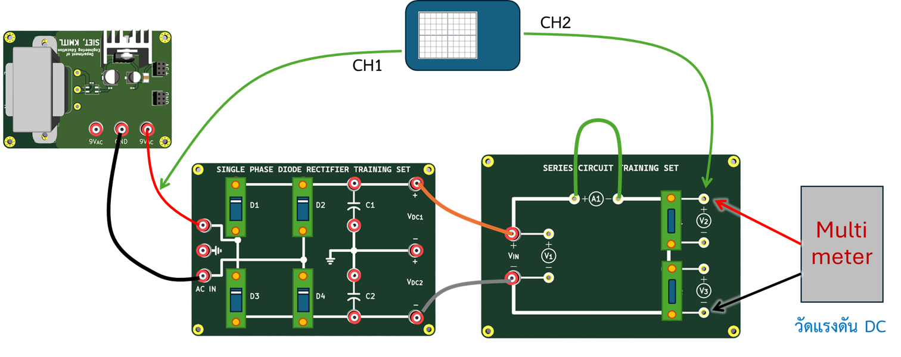

ชุดฝึกการเรียงกระแส
ที่จะเปลี่ยนการเรียนรู้ของคุณให้เป็นเรื่องง่าย สนุก และได้ผลลัพธ์ที่น่าทึ่ง!

ชุดฝึกของเรามาพร้อมความพิเศษที่เหนือกว่า:
-
เรียนรู้ครบจบในชุดเดียว:
- เจาะลึกการเรียงกระแสครึ่งคลื่น (Half-wave rectifier)
- สัมผัสประสบการณ์การเรียงกระแสเต็มคลื่น (Full-wave rectifier)
- ทดลองวงจรเรียงกระแสแบบบริดจ์ (Bridge rectifier) อย่างละเอียด
เรียนรู้การใช้งานตัวเก็บประจุฟิลเตอร์ (Capacitor filter):
- ทำความเข้าใจหลักการทำงานของตัวเก็บประจุในการกรองสัญญาณ
- เรียนรู้การลด Ripple ของแรงดันไฟฟ้ากระแสตรงได้อย่างมีประสิทธิภาพ
ปรับเปลี่ยนโหลดได้หลากหลาย:
- สามารถนำวงจรอนุกรม (Series circuit) หรือวงจรขนาน (Parallel circuit) มาต่อเป็นโหลดได้
- จำลองโหลดในรูปแบบ R (Resistive load) หรือ RL (Resistive-Inductive load) เพื่อให้การเรียนรู้ครอบคลุมทุกสถานการณ์
ทำไมต้องเลือกชุดฝึกการเรียงกระแสของเรา?
-
ออกแบบมาเพื่อการเรียนรู้ที่ง่ายและได้ผล:
- แผงวงจรชัดเจน เข้าใจง่าย
- คู่มือการทดลองละเอียด ทำตามได้ทุกขั้นตอน
-
เสริมสร้างทักษะการวิเคราะห์วงจร:
- ฝึกฝนการวัดค่าแรงดันและกระแสไฟฟ้าในวงจรเรียงกระแส
- พัฒนาความสามารถในการวิเคราะห์สัญญาณและแก้ไขปัญหา
-
คุ้มค่าและครอบคลุม:
- เรียนรู้การเรียงกระแสทุกรูปแบบได้ในชุดเดียว
- ต่อยอดการเรียนรู้ด้วยการจำลองโหลดแบบต่างๆ
ด้วยชุดฝึกการเรียงกระแสของเรา คุณจะสามารถ:
- เข้าใจหลักการทำงานของวงจรเรียงกระแสทุกประเภท
- ออกแบบและสร้างวงจรเรียงกระแสได้อย่างมั่นใจ
- วิเคราะห์และแก้ไขปัญหาในวงจรเรียงกระแสได้อย่างมืออาชีพ
- สร้างพื้นฐานที่แข็งแกร่งสำหรับการเรียนรู้ไฟฟ้าในระดับสูงต่อไป
อย่าปล่อยให้โอกาสในการเรียนรู้การเรียงกระแสอย่างมืออาชีพหลุดมือไป!
ติดต่อเราเพื่อสอบถามข้อมูลเพิ่มเติม